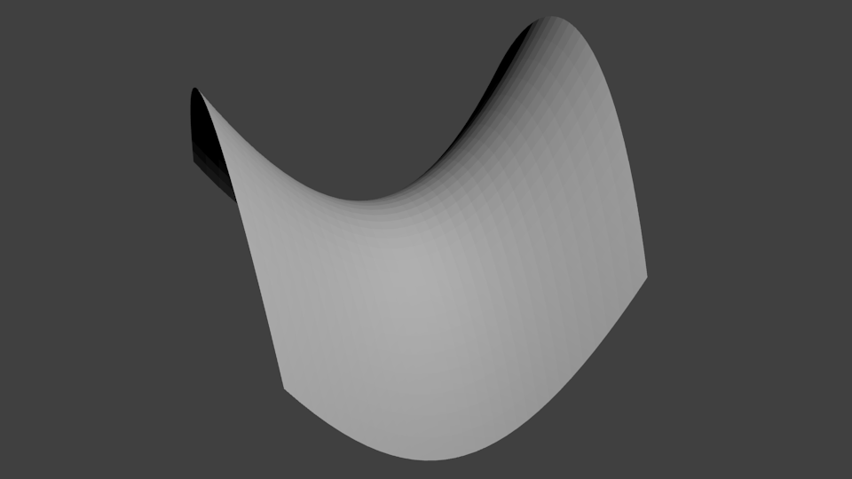
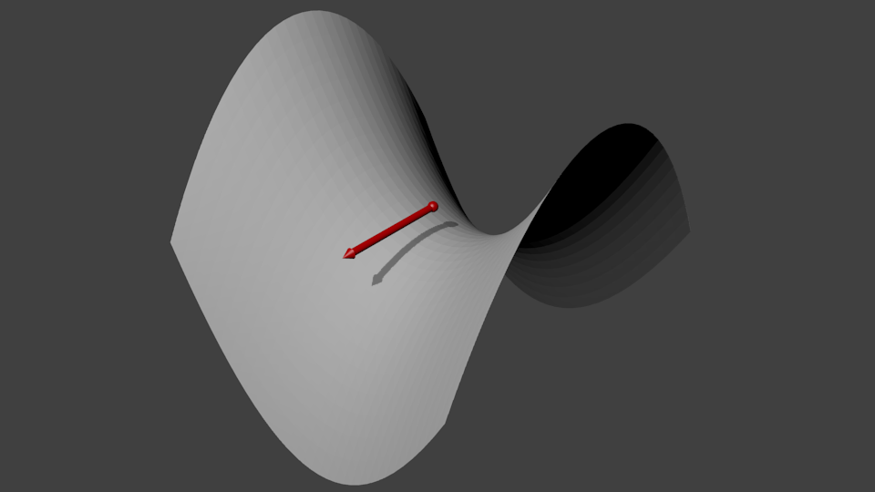
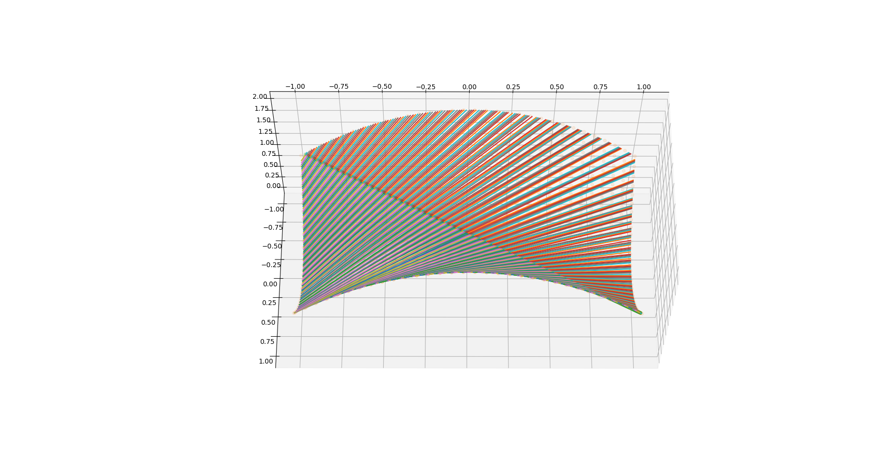
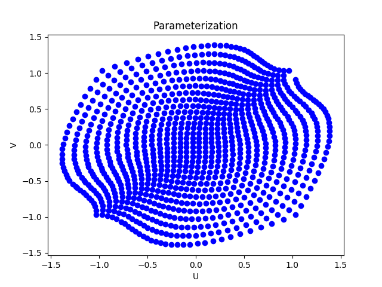
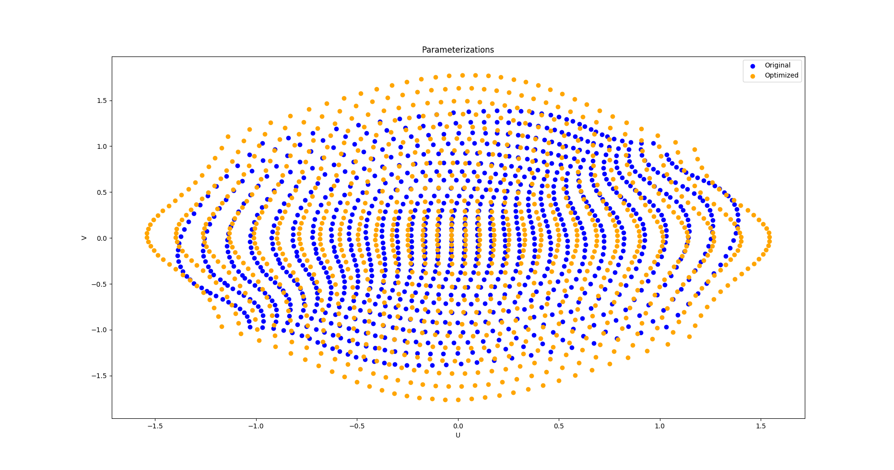
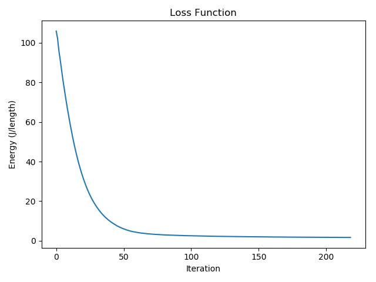

Tutorial¶
This tutorial will follow one of the examples in test.py, specifically the optimization of fiber orientations on the
saddle model. To run test.py simply run python test.py or launch test.py with python launcher.py which will launch
the test.py file in an IPython interactive shell with pylab already primed to be initialized.
Once Autofiber is installed correctly the package can be imported as follows:
from autofiber.generator import AutoFiber as AF
In test.py the experiments are setup such that a variety of angles can be computed sequentially. To create an AutoFiber
object we can use the following call:
# Saddle model - X3D - Anisotropic material properties
test = AF('demos/SmallSaddle32.x3d',
np.array([0.0, 1.0, 0.0]),
np.array([-np.cos(np.deg2rad(angle)), 0, -np.sin(np.deg2rad(angle))]),
np.array([0, 1, 0]),
materialproperties=materialproperties,
fiberint=0.01,
# Further angle to be applied to the given fiber direction
# This is typically used as a tolerance in the fiber angle but
# can be used to rotate the base parameterization such as in the case
# of the saddle part we can actually define a parameterization easily at 45.0 degrees.
# Recommended to be any number except exactly zero
angle_error=45.0)
Here is a breakdown of each parameter used to create the AutoFiber object:
- cadfile: Path to CAD file (currently supports x3d, stl, and De-La-Mo DMObjects)
- initpoint: 3D point closest to the center of the surface we would like to work on
- initdirection: 3D unit vector representing the fiber direction at initpoint
- initnormal: 3D unit vector indicating the surface normal at initpoint (used to determine which surface to operate on)
- materialproperties: Composite fiber material properties, if empty then a set of default properties will be used. materialproperties is setup as follows: (E, poisson’s ratio, G) if E is a list: for anisotropic [E1, E2, E3], nu is [nu12, nu13, nu23], and the shear modulus G is [G12, G13, G23]. If E is not a list then an isotropic material is used and G will be computed from E and nu.
- fiberint: Perpendicular distance between generated geodesics
- angle_error: Error incorporated into the initdirection, any error defined here is reversed during optimization
- accel: Utilize OpenCL parallel geodesic generator (WIP - not currently functioning)
Therefore, if we have the following model:
{kind=link}
we can pick the point which will be in approximately the center. The Autofiber package will determine the nearest vertex to start from so we don’t have to be extremely precise. It is not necessary to pick a start point at the center of the model, however starting from this location will give us the greatest opportunity to cover the entire surface with geodesic lines.

Now, we need to figure out the direction of the geodesics we would like to use. Typically, if we consider a plane that goes through the start point that shares the same general surface normal as our model then we can determine a good starting geodesic direction. Keep in mind that this direction will essentially set our U-V directions or in terms of composite fibers the U direction is the longitudinal direction and V is the transverse direction. Therefore, more than not, we will use an initial geodesic direction in a principle direction i.e. [1, 0, 0] as seen here:
{kind=link}
Occasionally, the algorithm will fail to assign all the vertices a UV coordinate and an error like the following might occur:
Traceback (most recent call last):
File "test.py", line 73, in <module>
angle_error=0.1)
File "/home/nate/research/autofiber/autofiber/generator.py", line 164, in __init__
self.create_parameterization()
File "/home/nate/research/autofiber/autofiber/generator.py", line 701, in create_parameterization
assert np.where((np.isnan(self.geoparameterization).all(axis=1) & np.array(~mask)))[0].size == 0
AssertionError
If this happens, then the parameter angle_error might be of use. This parameter allows us to incorporate an error into
the angle the initial geodesic direction makes with the U direction on our starting plane we described earlier. This is
depicted in the following image:
{kind=link}
Any error we create with the angle_error parameter will be reversed when we optimize the parameterization. For example,
when using the saddle model, if we use an angle_error=0.1, which means we are basically using the defined geodesic direction,
we will fail to assign all vertices. This is because the saddle and it’s doubly curved nature makes it difficult to parameterize
the full surface. However, if we use an angle_error=45.0 we can see that a full parameterization can be made. In most cases
this error should be ~0.1 or something close to zero (it’s not recomended to use zero because geodesics can’t be accurately
determined along mesh lines).
Once the geodesic direction vector has been determined and an appropriate angle_error applied then the surface normal,
typically that normal we used for the plane of the geodesic direction vector can be calculated, usually
by just taking the cross product of the longitudinal and transverse directions. This is also the vector which the initial
geodesic direction vector will be rotated upon when the angle_error is applied.
If we have properly defined the AutoFiber object, a parameterization will be created and the following output will be observed:
Angle: 0.0
x3d_indexedfaceset_loader: Non-implemented tag NavigationInfo
x3d_indexedfaceset_loader: Non-implemented tag Background
x3d_indexedfaceset_loader: Non-implemented tag PointLight
x3d_indexedfaceset_loader: Non-implemented tag Viewpoint
Calculating parameterization...
[==================================================] 100%
Time to calculate geodesic parameterization: 12.801896 seconds
This will result in the following geodesics on our model:
{kind=link}
as well as the following UV parameterization:
{kind=link}
Now, this has created the necessary components to create optimized parameterizations for any fiber angle. To perform and return an optimized parameterization we can use the following call:
texcoords2inplane = test.layup(0.0, plotting=True)
texcoords2inplane is a matrix transformation that can be used to convert either 3D coordinates into the optimized fiber
parameterization or the other way around. We can optionally set plotting=True if we would also like to view the results.
Once this call is completed and an output like the following has been observed:
Optimizing...
Initial strain energy: 111.22885079385848 J/(model length)
Residual: 4.048914335186282e-05
Time to optimize: 14.077847 seconds
we can use this transformation to find out the fiber orientation at any point on our model. The Abaqus optimized
function included in the Autofiber class can be used to perform this operation. This function was designed to be used
within the Abaqus context but works perfectly well on its own. The saddle demo does not come with any predefined
list of interesting points so the default will be used, which is the centroids of each triangular
element. Since we set plotting=True the fiber orientations at each element centroid were calculated and
can be observed in the following image:

The corresponding optimized parameterization can be seen below compared to the unoptimized starting parameterization. This process can be thought of as follows, in typical deformation theory we would start from a reference state and solve for the deformed state. However, in this scenario we are starting from the deformed state i.e. “inaccurate” geodesic defined space and solving for the reference, undeformed or lowest energy state. Shown along with this image is a plot of the loss function used to optimize the strain energy.
 {kind=link}
{kind=link}
Custom Points¶
To use the built in Abaqus function to find the fiber orientations at a list of custom locations on the model surface we can use the following call:
meshcoords = np.load("demos/curved_abaqus_mesh_coords.npy")
texcoords2inplane = test.layup(0.0, orientation_locations=meshcoords, plotting=True)
Where meshcoords is a saved list of three dimensional points lying on the surface of the model.
This is also demonstrated in the last demo in test.py titled “Curved Composite Mold / De-La-Mo - DMObject - Anisotropic material properties”